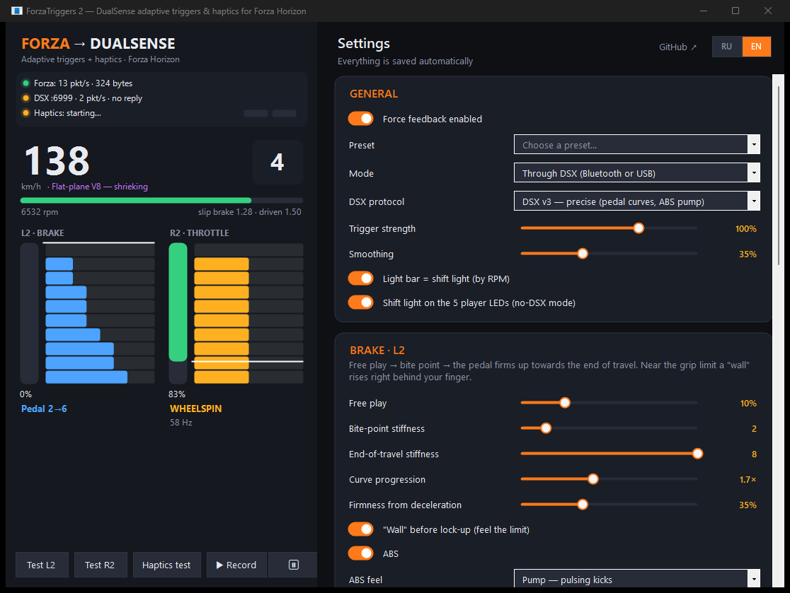

Forza Horizon 6 and 5 on PC give your PS5 controller only plain rumble. ForzaTriggers reads the game's telemetry and makes the triggers and HD haptic motors feel the brake pedal, ABS, wheelspin, gear shifts, kerbs, jumps and crashes.
Download for Windows (free) Source on GitHub
Free play, bite point, firming travel, and a "wall" at the grip limit so you can threshold-brake by feel. ABS pulses and lock-up shudder.
Spring that loads up under acceleration, kickdown detent, wheelspin vibration, rev-limiter bounce and gear-shift kick.
Engine pulse with a character per engine (V8, V10, V12, rotary, inline-4, EV…), weight transfer in corners, side-correct impacts and landings.
Single ~100 KB exe, no installer, no ads, MIT licence. English and Russian UI. DualSense and DualSense Edge.
ForzaTriggers.zip and unzip it anywhere.127.0.0.1, port 5300.ForzaTriggers.exe and pick direct USB (free ViGEmBus + HidHide, USB cable) or through DSX. Press Test L2 / Test R2 / Haptics test.Full guide, troubleshooting and the Game Pass note: README.
Not natively — only rumble. ForzaTriggers adds them using the official Data Out telemetry.
No. Direct USB mode uses only free drivers. If you own DSX, the app can work through it, including over Bluetooth.
No injection, no memory reading, no mods — just the UDP telemetry Forza sends by design, the same feed SimHub and motion rigs use.
Both. The Store / Game Pass version needs a one-time loopback exemption command, described in the README.
ForzaTriggers — бесплатная программа, которая включает адаптивные курки и хаптику геймпада PS5 DualSense в Forza Horizon 6 / 5 на ПК. Тормоз с точкой схватывания и ABS, пробуксовка, отсечка, переключения, удары и приземления. Скачать · Инструкция